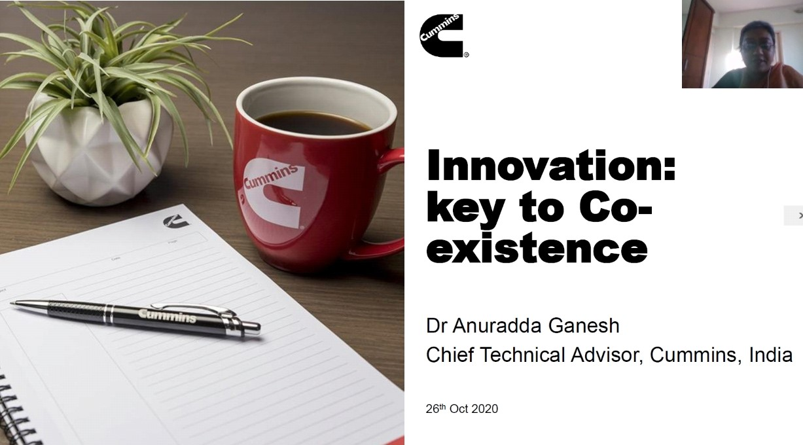
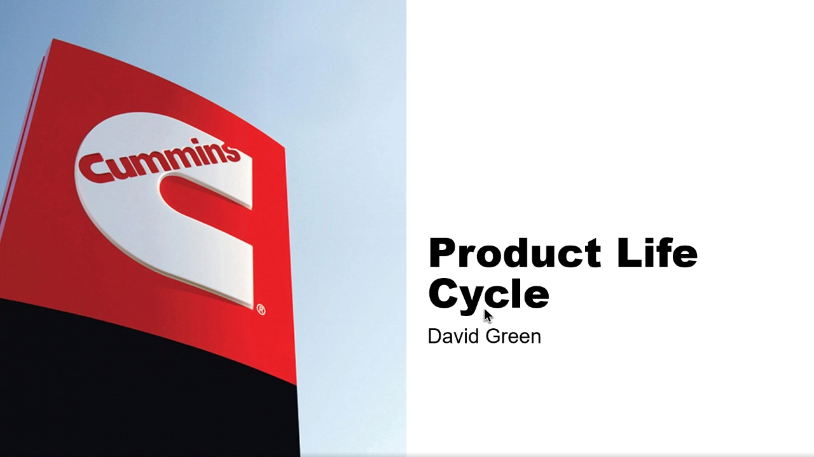
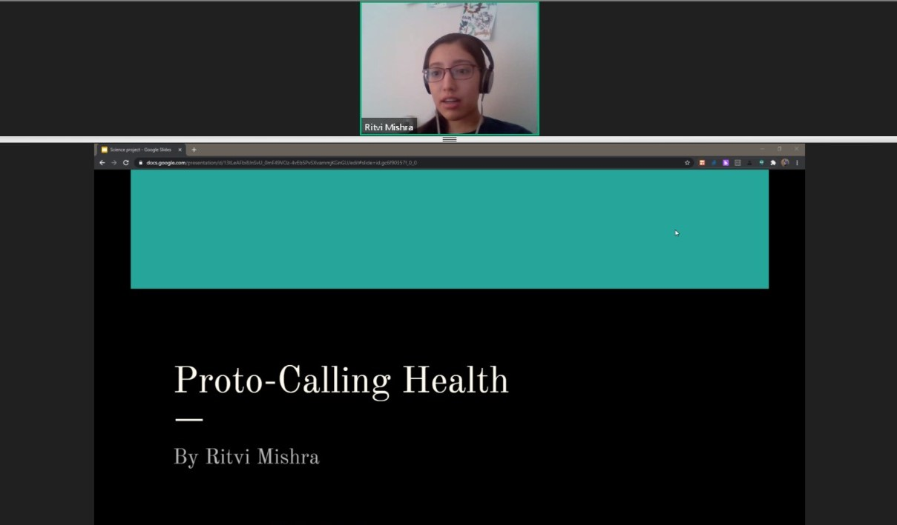
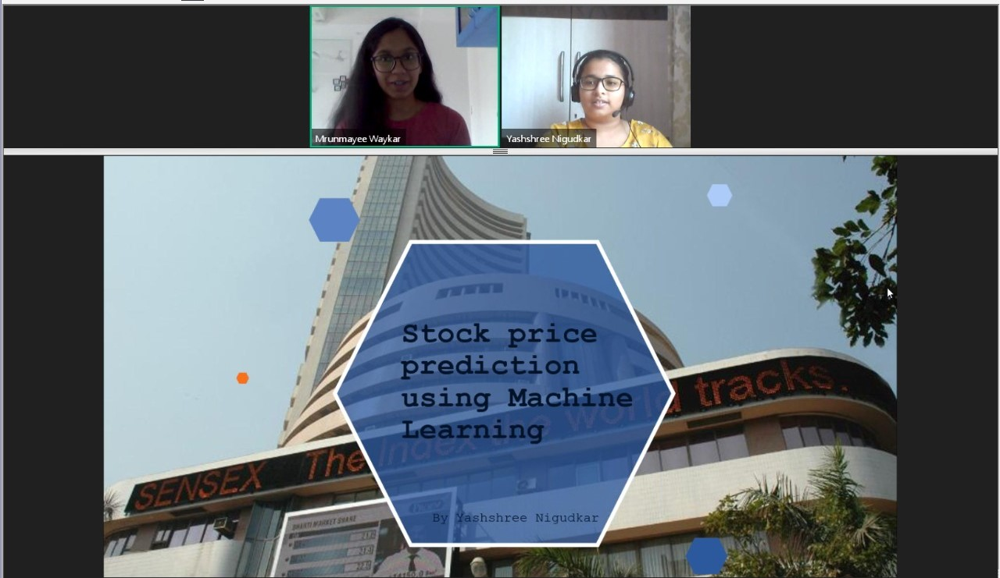
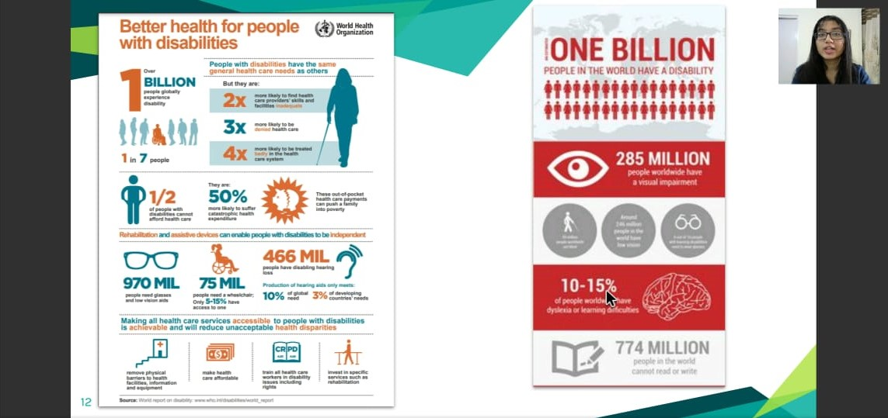
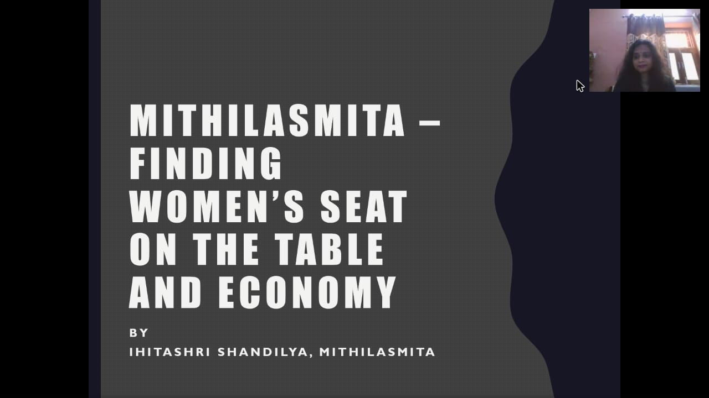

Society of Women Engineers, Cummins College of Engineering for Women (SWE CCEW)
chapter hosted their flagship event, “The Incube Conference”, in the year 2020 for the second
consecutive year.
The theme of the conference was “Coexistence” which focused on the importance of
sustainability, health, wellness, and application of engineering technologies in these fields.
The aim was to empower the engineers of tomorrow to understand the problems we are
facing today and to come up with solutions to solve them.
The event brought together bright minds including strong engineering leaders from across
the industry to talk about topics related to the theme. The conference had eminent speakers
from Cummins India, some start-up ventures, and student speakers from Cummins College of
Engineering speaking about various research topics that they had been working on.
The conference was hosted from 30th October to 1st November with talks spread out on all
the days. Due to the pandemic situation, the event was hosted virtually on the GoToWebinar
platform, with over 100 registrations.
Here are some statistics related to the attendees:
•95.7% of the attendees were women or those who identify as women/female
•90.6% of the attendees were students.
•4% were faculty members or staff from the college
•5.4% were industry professionals
Day 1


The conference began at 5.00 pm with the inaugratory speech of the Principal of CCOEW Dr. Madhuri Khambete,
in which she highlighted the efforts of Maharshi Karve and spoke about
the establishment of Cummins College of Engineering for women and how the SWE chapter
was relevant to the institution.
Next, Dr. Anagha Kulkarni, Faculty Advisor SWE CCEW and HOD IT, applauded the completion
of 4 years of the establishment of the SWE-affiliate since March 2016. She gave an
introduction about the work of SWE CCEW and also mentioned how the Incube conference
has helped the students in many ways. She then introduced Dr. Anuradda Ganesh, Chief
Advisor to Chief Technical Officer at Cummins India, who was the speaker of the day. She
began by stating that change is the only constant thing and how disruptive changes like the
ongoing pandemic, force us to leap. She then shared some fantastic videos regarding
innovations that people had come up with during the lockdown period to maintain social
distancing and various safety measures. She added that creativity is the new normal and
shared a video showing how the convocation ceremony was organized virtually for the
students of IIT Bombay.
In the next session, David Green, the New Product Development Technical Leader at Cummins
India, explained what Product Life Cycle exactly is. He elaborated on how the life of a new
product starts, grows, and then ends at one point. He explained some of his projects at
Cummins India, and, stated the implications of the Product Life Cycle and how long-term
product planning and technology research needs to be aligned in a way that technology exists
to support timely new product development and to ensure that market-leading new products
are launched.
Day 2


The second day of the Incube conference began with Ritvi Mishra's talk about
the different IoT protocols and platforms available for medical technology and its significance.
She shared her research done during the coronavirus pandemic and explained the increased
demand for health services which led her to think about the use of IoT in medical technology.
Throughout the session, she explained various protocols like BLE, ZIGBEE, etc. which
implement IoT and have applications in the health services sector.
In the next session, Neha Tiwari explained about the “new normal”, about the pandemic and
its impacts, various restrictions imposed on us, the increasing fear and uncertainty, our
changing lives, and how all of this is leading us to the “new normal”. She informed the
audience about the 3 C’s of navigating the pandemic – 1. Compassion 2. Competence and 3.
Change Management. She used the metaphor of the infamous story of the eagle shredding
its skin midway through its life for rebirth. She reminded us, hence, to adapt, accept, and
change as required. To keep hoping and moving. And finally, to keep navigating the pandemic
change as required.
In the third session of the day, Yashashree Nigudkar spoke about the various technical aspects
of the use of Machine Learning (ML) in stock price prediction. Starting with the basic
introduction to AI and ML, she went on to explain the fields where AI is applicable- ranging
from automation, gaming, smart devices to detecting diseases, analyzing background history
of people, and predictions of a variety of things. She highlighted the importance of the right
stock market investment as an additional source of income.
In the fourth and final session, Rucha Kulkarni explained how the use of biosignals can change
the face of rehabilitation engineering. She explained the applications of rehabilitation
engineering, Electromyography (EMG) is and how does it work by giving examples of EMG
signal graphs and an explanation of the mathematical aspect of it. Then, Rucha shared with
the audience, four different papers she had been reviewing and compared the accuracy
results for each of them. Each of the papers had different algorithms, different numbers of
features used along with some other factors. All the papers were compared and it was shown
how different factors can have different accuracy results.
Day 3


The third day of the Incube conference was started by Vasundhara Chavan, sharing her vision
about the future of shopping malls and markets and throwing light on the wide potential of
augmented reality to revolutionize industries and enterprises. The main idea behind E mart is
to create an immersive shopping experience by using augmented reality (AR). The speaker
talked about AR, its applications, it's working, and also the challenges faced while
implementing it.
The next speaker, Ihitashri Shandilya narrated the remarkable journey of her life from the
corporate world to entrepreneurship. Her brainchild organization Mithilasmita is an award-
winning social enterprise with the mission to preserve & promote the heritage folk art of
India. The speaker stressed the importance of technology in women empowerment. She put
forth some interesting anecdotes about how her background in technology proved
advantageous in networking, marketing, brand building, etc. Increased awareness through
access to global information is one of the key factors that benefit women entrepreneurs. Her
journey is indeed inspirational for all.
One of the topics for day 3 of the Incube conference was ‘Harnessing technology for social
good’. Tanya Jojy and Poorva Bhalerao, the speakers, began with a poll. They then threw light
upon the history of technology, shared few laws like Moore’s law, and talked about recent
developments in artificial intelligence and machine learning. They explained sustainable
software engineering and spoke about the social impact revolution which can be observed by
the change in investments, policies, choice of careers, how funds are endowed. They
highlighted points like being aware of the social issues and thinking ways to solve them,
making technology cheap and accessible to all. Elaborating design thinking, they said that
good design is the basis of a good product. Sustainability, psychology, a good user interface,
and a good user experience is very important.
The last talk of Day 3 of the Incube Conference, was by Nandini Singh, a second-year E&TC
student, who knows a thing or two about mental disorders, gave a talk on “Sensitisation in
Changing Times” where she mainly addressed some of the misconceptions regarding mental
health and provided a socio-economic perspective on the same. Nandini shared more of her
personal experiences and urged the audience to provide and seek help, whenever and
wherever the need be. She concluded her talk by quoting Dr. Brock Chisholm, the first
Director-General of WHO, who had declared that- “Without mental health, there can be no
true physical health.”